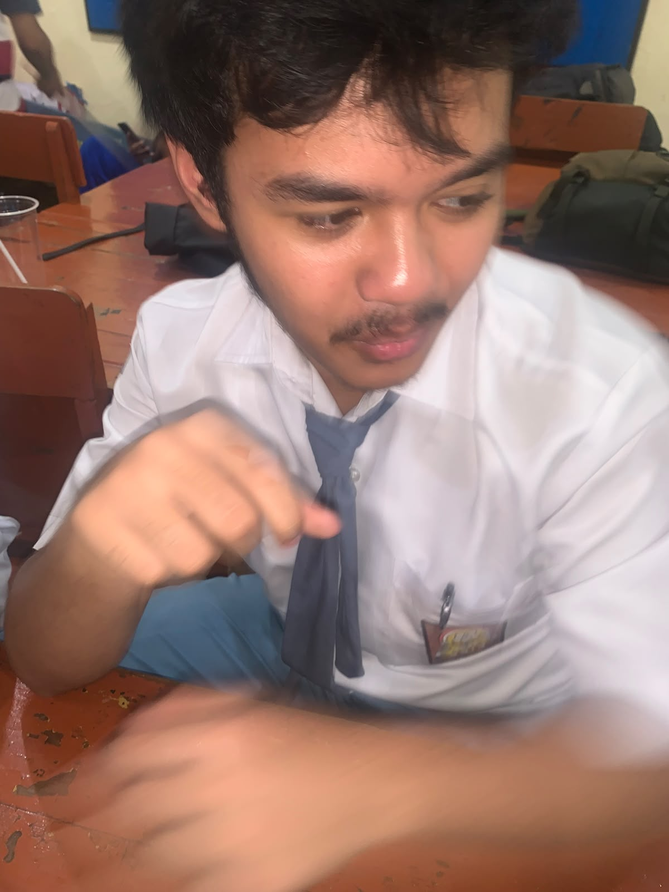
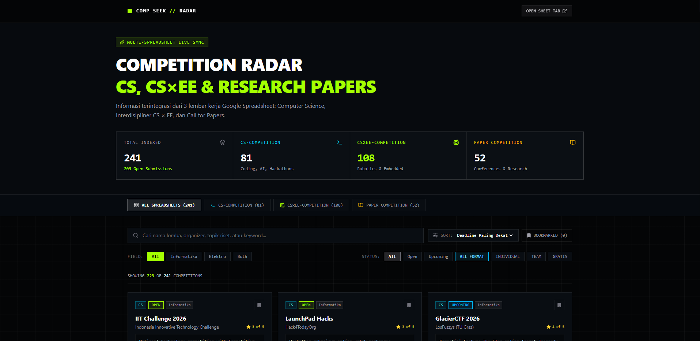
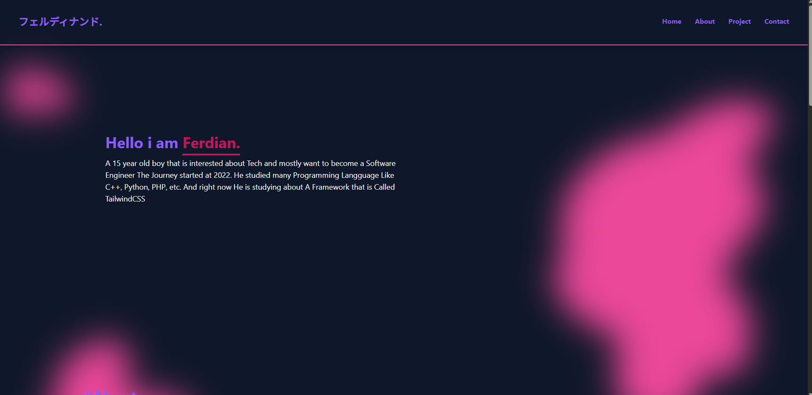
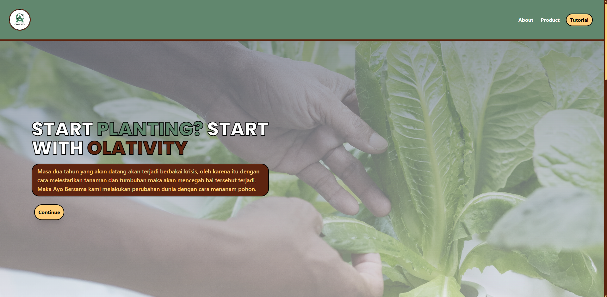

R&D Manager
Prestasi Junior Indonesia Student Company
Led student product research and development across digital and food-and-beverage products. Coordinated feasibility research, quality standards, and product catalog integration.
// PERSONAL_PORTFOLIO / 2022—PRESENT
$ whoami
Ferdian Adinata, S1 Teknik Informatika student at Institut Teknologi Sepuluh Nopember. Interested in software engineering, web systems, algorithms, and artificial intelligence.

[ F / 01 ]
:DISCOVER:
ABOUT_SECTION ↓
:SECTION: 01
// ABOUT_MESTATUS: OPEN_FOR_LEARNING[ TECH_ENTHUSIAST // WEB_CRAFT ]
I’m a Teknik Informatika student at Institut Teknologi Sepuluh Nopember with interests in software engineering, web development, and computational algorithms.
I enjoy building digital products, managing web systems, and solving technical problems through structured research and experimentation.
:SECTION: 02
// EXPERIENCESTATUS: VERIFIED_CVOrganizations and event work documented in Ferdian Adinata’s CV.
Prestasi Junior Indonesia Student Company
Led student product research and development across digital and food-and-beverage products. Coordinated feasibility research, quality standards, and product catalog integration.
SMADA Sains Club · SMAN 2 Surabaya
Documented science tutoring sessions and managed Instagram publication for club announcements, agendas, and activity results.
Celeste 2K26 External Committee
Built, designed, and maintained the event website as an external information platform. Supported responsive readability and cross-division publication of schedules and registration updates.
:SECTION: 02
// GITHUB_REPOSITORIESSOURCE: GITHUB.COM/12FERDIAN12 →Projects built while learning programming. Small in number, real in process, and each one a record of the next thing I learned.
PERSONAL_WEB // PORTFOLIO
A website about my personal work and the skills I have learned through studying and building.
STUDY_PROJECT // WEB
A study website made while learning HTML, Vanilla CSS, and PHP from the ground up.

COMP_SEEK // COMPETITION_RADAR
A competition discovery platform that indexes and organizes computer-science competitions and paper calls. Public demo available.

PERSONAL_SITE // WEB
Earlier personal website project and source of the portfolio’s original identity and content.

SC_PROJECT // EVENT_SITE
A Next.js and TypeScript web project with a public Vercel deployment. Repository README provides limited project detail.
:SECTION: 05
// ACHIEVEMENTSSTATUS: VERIFIED_CVCompetition results and research exposure listed in the CV.
:SECTION: 03
// TECHNICAL_TOOLKITSTATUS: GROWINGA growing toolkit shaped by actual projects. Strongest around the web stack; always learning what comes next.
:LANGUAGES:
:FRAMEWORKS:
:TOOLS:
:SECTION: 04
// CONTACTSTATUS: OPEN_TO_CONNECTHave a project, question, or useful resource to share? My socials are open.
$ contact.ferdian